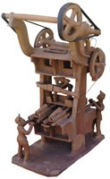
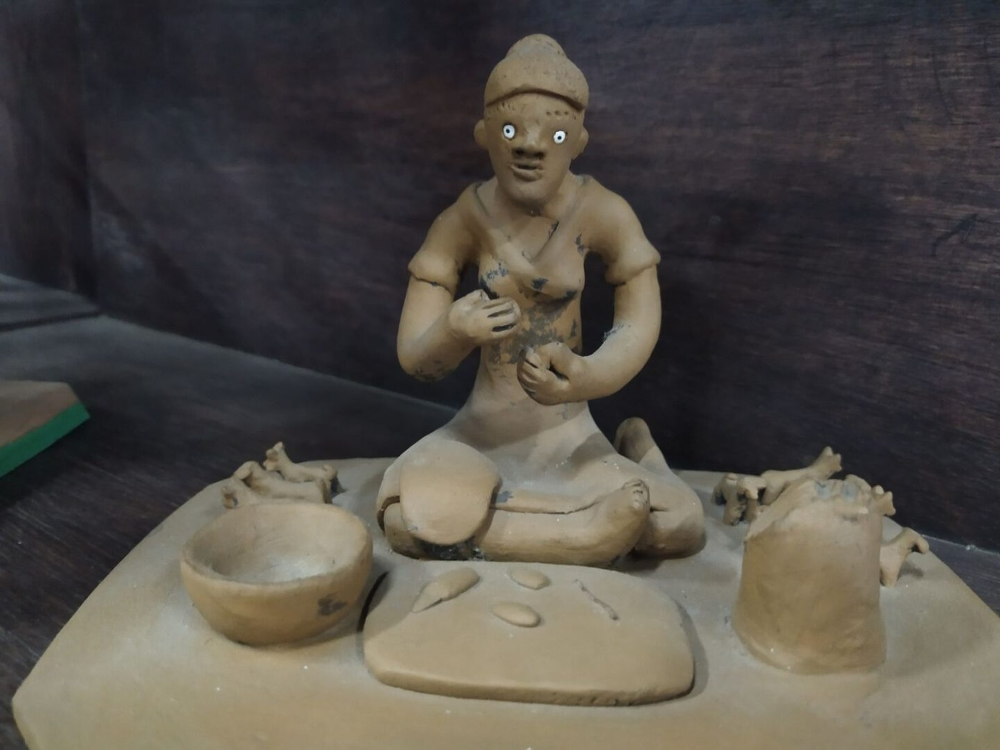

Mestre Luiz Antônio
A continuidade do barro do Alto do Moura depois de Vitalino.
Mestre Luiz Antônio é um dos nomes do Alto do Moura, em Caruaru, ligado à tradição do barro figurativo e à continuidade da herança cultural de Mestre Vitalino.
Mestre Luiz Antônio nasceu em Caruaru em 1º de junho de 1935 e pertence ao universo do Alto do Moura. Seu nome também aparece grafado como Luiz Antonio e Luiz Antônio.
Desde a infância, mexe com barro, fazendo brinquedos e pequenas figuras a partir do ambiente familiar e comunitário do Alto do Moura.
Sua obra se inscreve na linha de Mestre Vitalino, não como cópia, mas como continuidade de uma comunidade criadora. O barro, para Luiz Antônio, é dom, sustento, prazer e forma de representar o Brasil.
Luiz Antônio da Silva nasceu no Alto do Moura em 1935, em um ambiente que ele descreve como “terra de louceiras”. A mãe já fazia brinquedos de barro para vender na feira, e a convivência com Mestre Vitalino aparece como marco: Vitalino colocou sua banca ao lado da dele e ajudou a projetar o Alto do Moura para fora do Brasil. Luiz Antônio modela o que vê ao redor, em revistas e na televisão, criando cenas como “A Procissão” e “Fábrica de Telha”.
No Alto do Moura, o barro é herança — mas também reinvenção cotidiana.
Para observar na peça
- Cenas populares
- Herança vitaliniana
- Modelagem manual
- Relação entre comunidade e ofício
Materiais e técnica
Galeria de peças e referências de estilo
Obras e peças públicas reunidas para reconhecer linguagem, materiais e técnica. As peças da exposição são vistas apenas ao vivo.


Fontes e créditos
- Enciclopédia Itaú Cultural — Mestre Luiz Antônio https://enciclopedia.itaucultural.org.br/pessoas/21331-mestre-luiz-antonio
- Diretoria-Geral de Promoção da Economia Criativa — Mestre Luiz Antônio https://www.youtube.com/watch?v=FuioUnLa38s
- Artesol — Flor do Barro https://artesol.org.br/stories/flor-do-barro-as-mulheres-na-arte-figurativa-do-alto-do-moura/
- Referência de acervo da equipe — OCR e conferência visual Páginas fotografadas/OCR revisado: 030. Fonte interna de referência da equipe, enviada em 02/07/2026.
- Arte do Brasil — Luiz Antônio da Silva http://www.artedobrasil.com.br/luiz_antonio.html